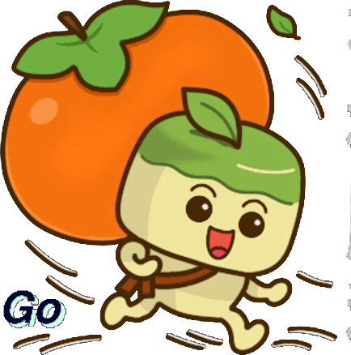

元氣背柿小勇士出發！通關解鎖 6 款不重複特色 Mini-Games！
A D 或 ← →（手機左側 ◀ / ▶）
Space 或 W（空中再按一次二段跳）
第2關踩金腳印/跳躍踩怪可超高彈跳與狂賺好運金幣！
J 或 X（開槍可直接擊落敵人紅色子彈）
L 或 Shift（全身無敵，穿越子彈與深坑）
Q / E（1:果籽彈 2:三向散射 3:長按蓄力巨砲）
免輸入密碼！輸入您的暱稱或帳號即可開始記錄戰績與進度：
| 關卡名稱 | 通關狀態 | 歷史最高分 |
|---|
| 迷你遊戲 | 解鎖條件 | 歷史最高分 |
|---|
選擇冒險關卡挑戰，通關後可解鎖 6 款特色 Mini-Games！
每通過一個主線關卡，就能解鎖一款全新玩法的特色小遊戲！
| 動作 | 電腦鍵盤 / 手把 | 手機觸控 |
|---|---|---|
| 左右移動 | A D 或 ← → | 左側 ◀ / ▶ |
| 跳躍 / 蹬牆跳 | W Space K | 右側 ⬆️ 跳躍 |
| 踩腳丫踩怪 | 空中落下踩踏金腳印或敵人 | 跳上金腳印/敵人頭上 |
| 下落穿越跳台 | S + 跳躍 | ▼ + ⬆️ |
| 發射甜柿彈 | J 或 X (可蓄力) | 右側 🌰 射擊 |
| 無敵空中衝刺 | L Shift C | 右側 💨 衝刺 |
| 切換武器型態 | Q E 或 123 | 右側 🔄 換武 |
| 暫停遊戲 | Esc 或 P | 右上選單 |
成功抵達豐收傳送門！小勇士柿氣大振！
本關累積得分: 0
收集甜柿金幣: 0
別灰心！整裝待發，再來一次！
你成功擊敗了貪吃蟲魔王與終極魔王！保衛了果園的豐收！解鎖真魔王彈刀挑戰！
最終總分: 0
總收集甜柿: 0